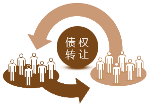

联合金融投资人平台上购买的投资产品或理财产品（“创投专区”产品除外），持有超过规定期限之后，如果因为流动性的要求，或者基于财富最大化增值的目的，需要出让债权，回笼资金进行再投资或消费，可以将该等债权放入债权市场中转让。转让成功的卖方需向联合金融平台支付转让额0.5%的费用作为平台转让服务费。在联合金融平台上抢不到投资标的的投资人也可以根据自身的投资计划，在债权市场认购他人转让的债权。 |
 |
“债权转让”项目是已投资的个人用户因个人需求将符合相关条件的投资债权转出而产生的项目，此类项目投资期限更短，项目竞购更加轻松，起投金额更加灵活！ 转让交易规则：
1、 投资理财类产品持有一个付息周期后方可转让，支持分批转让，但付息日当天不可转让；
2、 创投产品涉及到工商变更，暂时不可转让。
3、 每次转让债权份额不低于该产品的起投额度，转让过程中未成交部分可随时取消转让；
4、 转让有效期为提出申请起的3个自然日内，被全部/部分认购的债权即时成交；
5、 债权转让方发起债权转让，在交易未撤销或完成之前，转让方不得发起同一产品的剩余债权转让；
6、 转让价格由转让方自行定价，可以折让或加价，转让成交后，联合金融平台向转让方收取实际成交金额0.5%的作为转让服务费；
7、 认购债权转让的项目即时生效，认购成功当日计息；
8、 通过债权转让交易获得的债权，必须持有一个付息周期后方可再次转让；
期限更短：转让方在提出债权转让前已经持有一段时间，债权受让方只需要持有剩余期限即可获得收益，可以满足用户短期投资的需要； 收益更高：转让方基于资金回笼的需求，一般会在未实现利息部分进行折让，该部分折让成为受让方的超额收益。 |